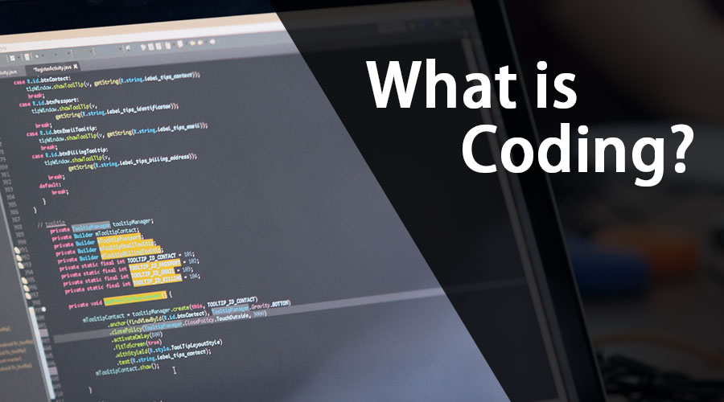

Why do We Learn Coding For Future

Posted by Paul on TuesDay, June 21st 2021
Coding, sometimes called computer programming, is how we communicate with computers. Code tells a computer what actions to take, and writing code is like creating a set of instructions. By learning to write code, you can tell computers what to do or how to behave in a much faster way In this post, let's focus on Prgramming LanguageL. We will learn what HTML is all about, and why you too should learn it.
What is HTML?
HTML stands for HyperText Markup Language. It's a markup language that web developers use to structure and describe the content of a webpage (not a programming language). HTML consists of elements that describe different types of content: paragraphs, links, headings, images, video, etc. Web browsers understand HTML and render HTML code as websites.
In HTML, each element is made up of 3 parts:
- The opening tag
- The closing tag
- The actual element
Why should you learn HTML?
There are countless reasons for learning the fundamental language of the web. Here are 5 of them:
- To be able to use the fundamental web dev language
- To hand-craft beautiful websites instead of relying on tools like Worpress or Wix
- To build web applications
- To impress friends
- To have fun 😃